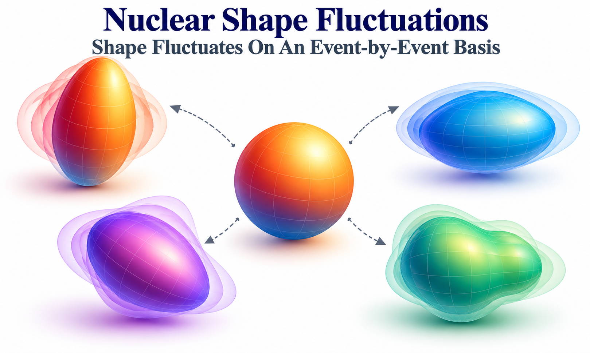

Impact of Nuclear Shape Fluctuations in High-Energy Heavy-Ion Collisions
Connecting fluctuating nuclear structure to heavy-ion initial-state geometry
Overview
Nuclei are often described by a single average shape, such as spherical, prolate, or oblate. In reality, the nuclear wave function may contain a distribution of shapes: the magnitude of the deformation and its triaxiality can both fluctuate. High-energy heavy-ion collisions offer a complementary way to investigate these fluctuations. The initial positions of the participating nucleons determine the geometry of the matter created in the collision, which in turn influences the subsequent collective expansion.
This project asks how fluctuations of intrinsic nuclear shape affect the initial collision geometry, and whether the average deformation can be separated from its fluctuations. Using analytical estimates and Monte Carlo Glauber simulations, we study two initial-state observables: elliptic eccentricity, \(\varepsilon_2\), and the inverse transverse size, \(d_\perp\). They are related, respectively, to elliptic flow and event-by-event variations of mean transverse momentum. We find that fluctuations of deformation magnitude modify their variances and higher-order cumulants, while fluctuations of triaxiality progressively wash out the distinction between prolate and oblate shapes.
Analysis
Beyond a fixed nuclear shape
A quadrupole-deformed nucleus can be characterized by two parameters: \(\beta\), the magnitude of its deformation, and \(\gamma\), its triaxiality. In this convention, \(\gamma=0\) describes a prolate shape, \(\gamma=\pi/3\) an oblate shape, and \(\gamma=\pi/6\) a maximally triaxial shape. A conventional fixed-shape calculation assigns a constant pair \((\beta,\gamma)\) to each nucleus and averages only over its spatial orientation.
Here we additionally allow the nuclear shape itself to fluctuate. The model samples \(\beta\) and \(\gamma\) from distributions characterized by their means \((\bar\beta,\bar\gamma)\) and widths \((\sigma_\beta,\sigma_\gamma)\). This separates two physically different questions: what is the average nuclear shape? and how broadly does the nucleus fluctuate around that shape? The collision observables need not respond to these two properties in the same way.

Connecting nuclear shape to the collision geometry
For each event, the positions of the participants define the complex elliptic eccentricity and an inverse-size measure,
\[ \boldsymbol{\varepsilon}_2 =-\frac{\langle r_\perp^2e^{2i\phi}\rangle_{\mathrm{part}}} {\langle r_\perp^2\rangle_{\mathrm{part}}}, \qquad d_\perp=\sqrt{\frac{N_{\mathrm{part}}} {\langle r_\perp^2\rangle_{\mathrm{part}}}}. \]
Here the averages are over participating nucleons in a single event. \(\varepsilon_2=|\boldsymbol{\varepsilon}_2|\) measures the ellipticity of the initial transverse distribution, whereas \(d_\perp\) increases when the overlap region becomes more compact at comparable participant number. In a collective response picture, \(v_2\simeq\kappa_2\varepsilon_2\) and fluctuations of \(d_\perp\) are related to variations of radial expansion and \([p_T]\). These are connections to final-state observables; the calculations in this paper are performed at the initial-state level, rather than with full hydrodynamic evolution.
Modeling event-by-event deformation fluctuations
The study uses a deformed Woods-Saxon nucleon distribution and Monte Carlo Glauber simulations of ultra-central \(^{238}\)U+\(^{238}\)U collisions at zero impact parameter. This setting suppresses the geometric anisotropy associated with a nonzero impact parameter and makes the effects of intrinsic deformation easier to isolate. For each nucleus, the model samples its deformation parameters and a random orientation before computing participant positions and the corresponding \(\varepsilon_2\) and \(d_\perp\).
Analytical leading-order relations guide the interpretation, while extensive nucleon-Glauber calculations quantify higher-order corrections. A constituent-quark Glauber calculation provides a separate check of the qualitative trends. This combination lets us distinguish robust dependencies on the deformation moments from details of the initial-state model.
What do the higher-order observables reveal?
To leading order, the deformation-dependent part of the second moments of \(\varepsilon_2\) and \(d_\perp\) is governed by
\[ \langle\beta^2\rangle=\bar\beta^2+\sigma_\beta^2. \]
Consequently, a two-particle observable alone cannot generally determine whether a larger fluctuation signal comes from a larger average deformation or from stronger event-by-event fluctuations of that deformation. Higher-order observables offer complementary sensitivity. Mixed three-particle correlations between eccentricity and inverse size, and the third moment of inverse-size fluctuations, depend at leading order on \(\langle\beta^3\cos(3\gamma)\rangle\). Four-particle eccentricity cumulants also probe \(\langle\beta^4\rangle\) and combinations of lower moments. The higher moments therefore carry information not contained in the variance alone.
In particular, a wider distribution in \(\beta\) modifies not only the variance but also the skewness and kurtosis of the initial-state observables. The numerical study demonstrates where leading-order expectations work and where higher-order contributions become important. These effects are presented in detail in the published paper.
Why triaxiality fluctuations matter
The response to \(\gamma\) fluctuations has a distinct pattern. For a Gaussian distribution of \(\gamma\),
\[ \langle\cos(3\gamma)\rangle =e^{-9\sigma_\gamma^2/2}\cos(3\bar\gamma). \]
Thus, increasing \(\sigma_\gamma\) suppresses the leading term that distinguishes prolate and oblate configurations in the three-particle observables. In the large-fluctuation limit of the model, their predictions converge toward those for a rigid triaxial nucleus. A nucleus whose triaxiality fluctuates widely may therefore look quite different from a nucleus with the same mean shape held fixed. This makes it essential to account for shape fluctuations when interpreting flow-based nuclear-structure constraints.
Can the mean deformation and its fluctuations be separated?
A central result of the paper is a strategy for constraining both \(\bar\beta\) and \(\sigma_\beta\). Since the second eccentricity moment primarily measures \(\langle\beta^2\rangle\), we examined a combination of the second and fourth moments,
\[ F_K=\langle\varepsilon_2^4\rangle -K\langle\varepsilon_2^2\rangle^2, \]
with \(K\) chosen to minimize sensitivity to \(\sigma_\beta\). In the nucleon-Glauber study, an optimized value near \(K=2.54\) produces a quantity that depends mainly on \(\bar\beta^4\). The mean deformation inferred in this way can then be combined with the second moment to constrain the fluctuation width.
This is a model-tested method, not a model-independent determination of nuclear deformation from experimental data. Its separation power becomes weaker when the fluctuations are comparable to or larger than the mean deformation, and quantitative application to measured flow requires control of the subsequent hydrodynamic response. Nevertheless, the construction illustrates why combining cumulants of different orders is more informative than relying on one observable.
My Contribution
As the first author, I investigated the effects of quadrupole-deformation and triaxiality fluctuations on collision geometry using Monte Carlo simulations. My work focused on the distributions and higher-order correlations of \(\varepsilon_2\) and \(d_\perp\), including how different moments respond to the mean nuclear shape and its event-by-event fluctuations. The study also developed and tested combinations of eccentricity moments that can help separate the average deformation from its fluctuation width.
Broader Implications
The work connects intrinsic nuclear-structure fluctuations with the collective observables of relativistic heavy-ion collisions. Because elliptic flow and mean transverse momentum respond to different aspects of the same initial geometry, their moments and correlations offer complementary constraints on nuclear shape. The central lesson is that extracting a nuclear deformation from high-energy collisions requires accounting for both its mean and its fluctuations.
This approach complements traditional nuclear-structure measurements and motivates combined studies of elliptic flow, radial-flow fluctuations, and higher-order cumulants across collision systems. Future comparisons with full hydrodynamic calculations and data can test how much of the initial-state sensitivity survives into experimentally measured observables. A complementary experimental example is the ATLAS O+O and Ne+Ne flow measurement, which tests the sensitivity of collective flow to the intrinsic shapes of light nuclei.